Consejo Directivo
Presidencia
Secretarios
Vocales
Tesorero
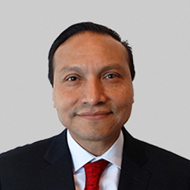
Dr. Alfredo Cabrera Rayo
Presidente
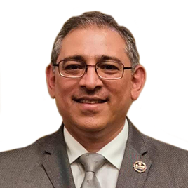
Dr. Nikos Christo Secchi Nicolas
Vicepresidente
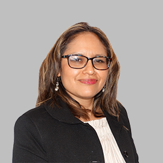
Dra. María del Pilar Cruz Domínguez
Primer Secretario
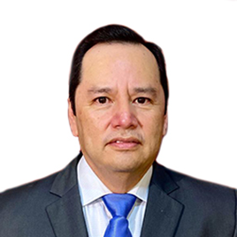
Dr. Faustino Morales Gómez
Segundo Secretario
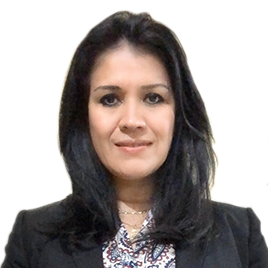
Dra. María Cristina Guerrero de León
Primer Secretario suplente
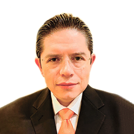
Dr. Juan Carlos Anda Garay
Segundo Secretario suplente
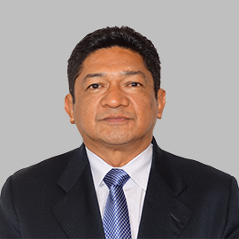
Dr. Julio César Jiménez Paredes
Primer Vocal
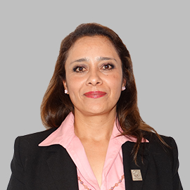
Dra. Karina Díaz Jiménez
Segundo Vocal
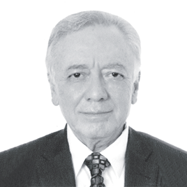
Dr. Francisco Zambrano Espíritu
Primer Vocal suplente
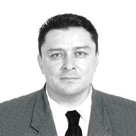
Dr. Ramón Barrera Cruz
Segundo vocal suplente
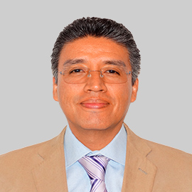
Dr. José de Jesús Arredondo Sandoval
Tesorero
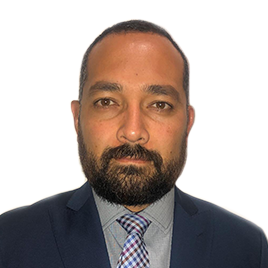
Dr. Miguel Ángel Gómez Pluma
Subtesorero